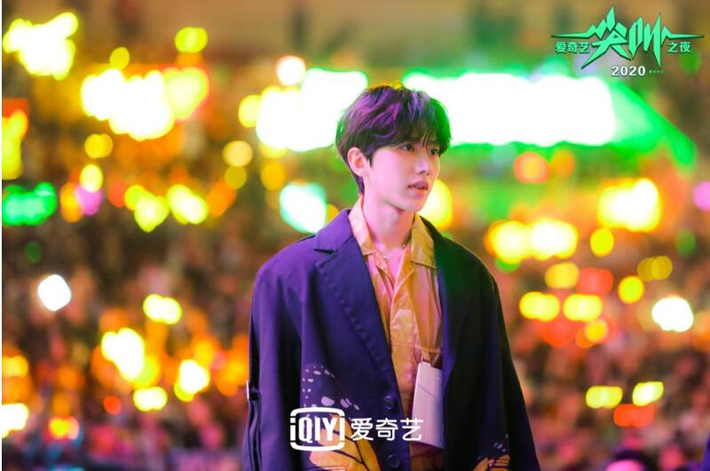

“2021爱奇艺尖叫之夜”，于2020年12月5日举行。 [1] 2021爱奇艺尖叫之夜由蔡徐坤、黄渤、孙俪、沈腾、THE9、王一博（按姓名首字母排序），以及爱奇艺副总裁、BKStore厂牌主理人车澈，爱奇艺副总裁、节目开发中心总经理姜滨，知名导演管虎等80多位重磅明星嘉宾的共同参与，角逐出的共40余项荣誉的诞生
年度全能歌手：蔡徐坤
爱奇艺尖叫之夜仅仅只是一场演唱会吗？答案是no。爱奇艺为爱尖叫晚会通过回顾影视圈大事件，客观全面展现戏剧、综艺、音乐、电影、偶像各个领域的真实成绩，同时还把脉未来的影视作品走向，每一年的“尖叫之夜”都是一场文化与艺术的交流平台。